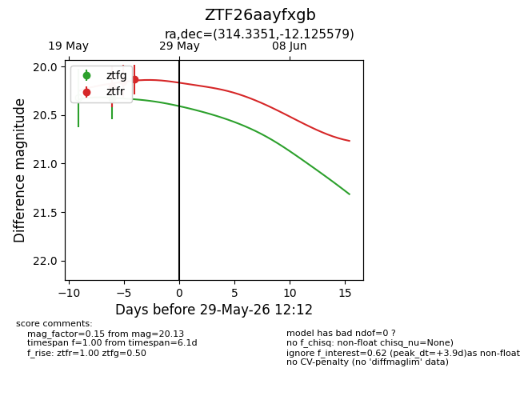
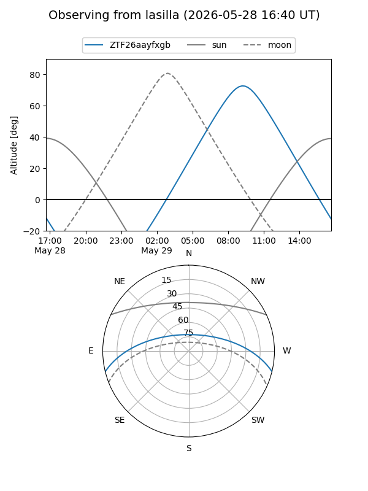
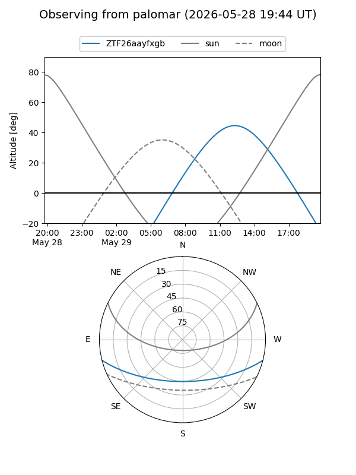
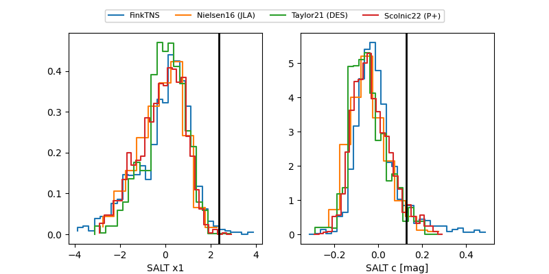

ZTF26aayfxgb
Target ZTF26aayfxgb at 2026-05-29 12:16
Aliases and brokers:
lsst-FINK: link
lsst-Lasair: link
lsst-ALeRCE: link
ztf-FINK: link
ztf-Lasair: link
ztf-ALeRCE: link
alt names
ZTF26aayfxgb (ztf,fink_ztf)
Coordinates:
equatorial (ra, dec) = 314.3351,-12.12558
equatorial (HMS+DMS) = 20:57:20.42,-12:07:32.08
galactic (l, b) = (36.0777,-33.37445)
Flags:
Photometry:
last ztfg=20.33, ztfr=20.13
1 ztfg, 3 ztfr detections
Lightcurve

Visibility


Additional plots
